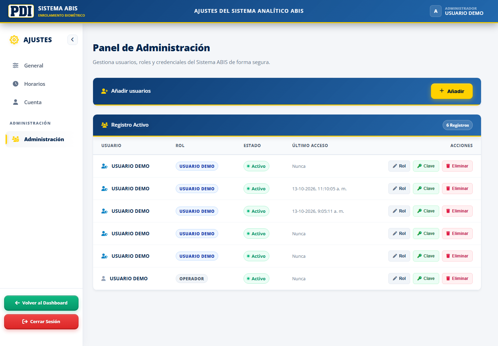
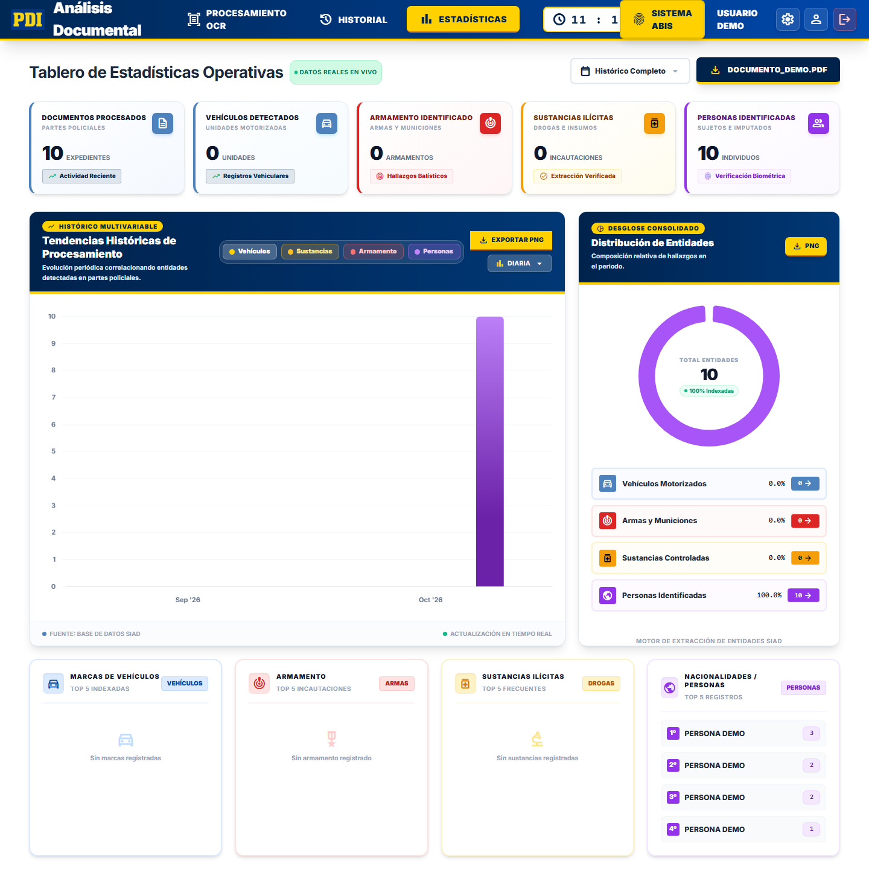

Consulta directa en PostgreSQL01 / CIFRADO

CIFRADO DE CAMPOS
AES-256-GCM
El sistema cifra los datos personales antes de almacenarlos.
- Nombre, RUT y teléfono
- Los valores presentes aparecen como cadenas cifradas. Los campos sin información conservan su valor nulo.
- Lectura desde la aplicación
- La aplicación utiliza la clave configurada para recuperar la información en sus flujos autorizados.
La captura evidencia el cifrado de estos campos, no de todas las columnas de la base.
RELACIÓN DOCUMENTAL
Persona y documento
Persona y documento
siguen vinculados
La consulta une entidades_personas con documentos mediante documento_id.
- Clasificación
- Tipo de persona e indicador de minoría de edad.
- Documento de origen
- Nombre del archivo asociado a cada registro.
- Responsable y fecha
- Usuario que realizó la carga y fecha de procesamiento.
La consulta muestra metadatos de trazabilidad sin seleccionar nombre, RUT ni teléfono.
Relación persona / documento02 / ORIGEN


Dashboard Ejecutivo

Ingesta ETL Segura

Métricas & Tendencias

Gestión de Usuarios
Haz clic en cualquiera de las capturas para ampliar en pantalla completa con zoom interactivo

Motor OCR & IA

Historial Documental

Estadísticas Forenses

Panel de Configuración
Haz clic en cualquiera de las capturas para ampliar en pantalla completa con zoom interactivo